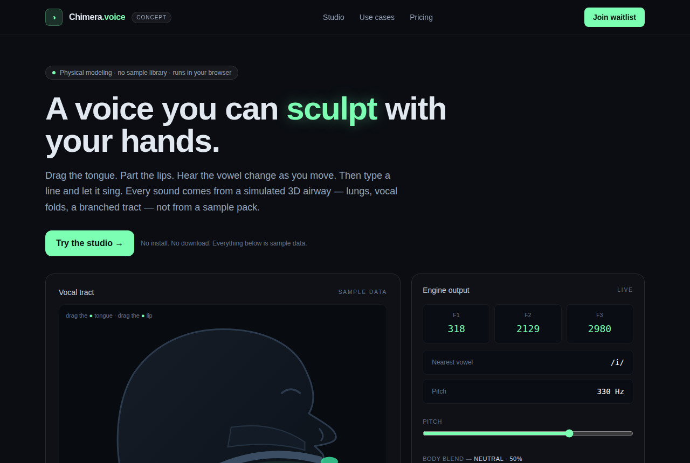

Chimera: A Physical-Modeling Voice Synth in Your Browser
jamesondh/chimera-vocal-synth · AI appsMIT⭐ 1,145

Chimera is an open-source vocal synthesizer that runs entirely in the browser. Unlike sample-based tools, every sound is generated by a physical model of the human airway — lungs, vocal folds, and a branched vocal tract — written in Rust and compiled to WebAssembly for an AudioWorklet. You can drag the tongue, lips, and jaw in a live 3D cutaway to shape vowels, type English text or IPA to make it speak, draw notes on a piano roll to make it sing, or trigger beatbox drums that are themselves articulatory gestures. There's even a "bestiary" with a songbird syrinx, seal, alligator, and elephant.
The project is taking off because it's a rare combination: a technically deep acoustic simulation with an immediate, playful interface. The README notes that the same Rust engine runs natively for tests and a CLI, and includes comparisons against real singers and speech databases. At 1.1k stars in just a few days, it's clearly striking a chord with music producers, sound designers, and AI audio enthusiasts.
The product opportunity is a hosted web app that removes the Rust/WASM setup barrier. Imagine humming a melody and getting a synthetic voice back, text-to-singing with exportable WAVs, and a marketplace for voice presets. A subscription or one-time license could work for creators who need quick vocal textures without a full DAW. The MIT license makes commercial forks viable, but the space is crowded with ElevenLabs, Suno, and Vocaloid. The physical-modeling sound may also need to prove it can match the naturalness of sample-based libraries before paying customers commit.
Today's top 5
| # | Repo | Buzz | Startup | Overall |
|---|---|---|---|---|
| 1 | jamesondh/chimera-vocal-synth | 8.67 | 7.3 | 7.29 |
| 2 | jhaizhou-ops/S2Arm | 8.67 | 6.25 | 7.23 |
| 3 | IainKay/ram-altman | 8.0 | 4.85 | 6.96 |
| 4 | storytold/craft-anything | 8.67 | 6.35 | 6.88 |
| 5 | vercel-labs/agent-desktop | 7.67 | 5.65 | 6.87 |